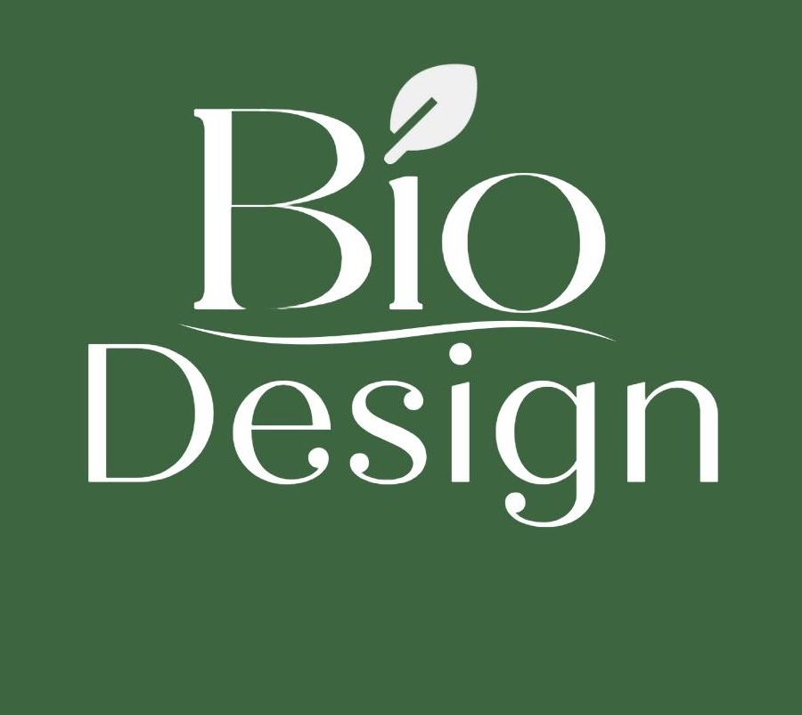
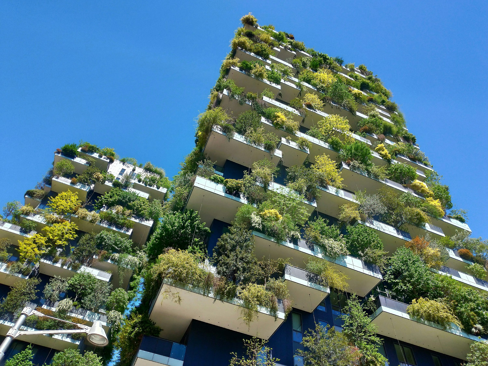
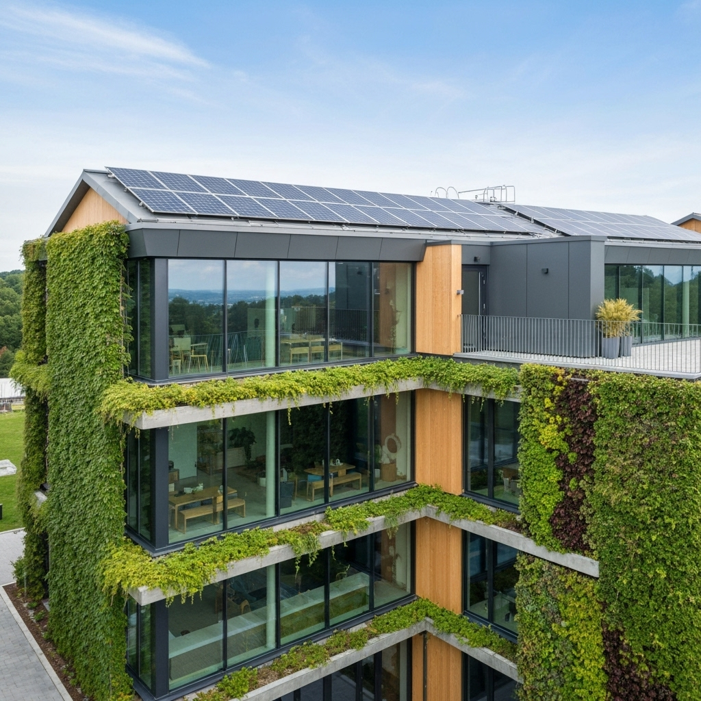
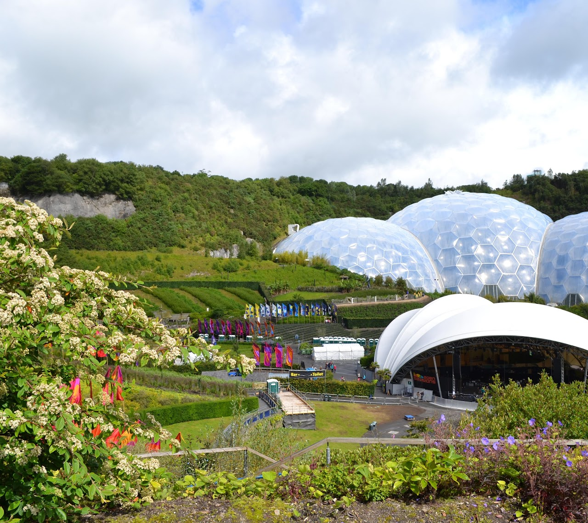

Iniciativa 1
Nosso projeto tem como objetivo recolher materiais que seriam descartados e transformá-los em novas utilidades, como estruturas para suportes de plantas e outras soluções sustentáveis.
Saiba mais
Arquitetura viva desde a raiz
Arquitetura Sustentável para um futuro melhor
Conheça o projeto
Quem somos
O BioDesign surge como uma iniciativa transformadora que une sustentabilidade e arquitetura para construir um futuro mais equilibrado. Acreditamos que cada material tem uma segunda vida — e cada espaço, o potencial de reconectar pessoas e natureza.
Saiba mais sobre nósNossas ações

Nosso projeto tem como objetivo recolher materiais que seriam descartados e transformá-los em novas utilidades, como estruturas para suportes de plantas e outras soluções sustentáveis.
Saiba mais
Queremos promover a conscientização sobre práticas que contribuem para um futuro mais sustentável, como métodos capazes de auxiliar na retenção de calor e responder de forma inteligente às mudanças climáticas.
Saiba maisNosso primeiro projeto
De madeiras descartadas para um suporte de plantas: a arquitetura sustentável se manifesta nos pequenos detalhes, transformando o que seria lixo em peças funcionais e com identidade própria.